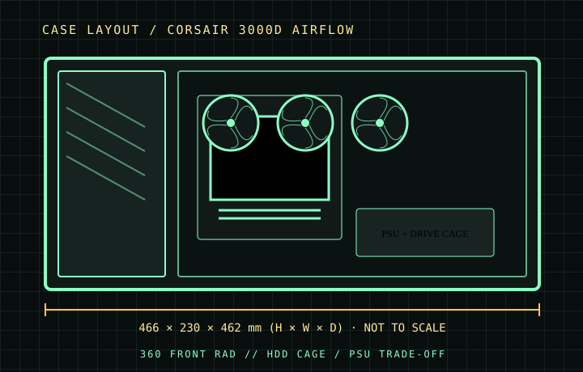

[ CASES // IDENTIFIED CHASSIS ]
Corsair 3000D Airflow
The 3000D Airflow is a conventional front-intake tower whose open mesh and short internal layout favor unobstructed air entry. The published GPU limit is 360 mm, so check the card with its installed front fans and any front radiator rather than treating the case limit as a guaranteed build dimension.

MODEL SCOPE: Specifications describe the named enclosure generation, not every visually similar case or retail bundle. Published maximums are component-envelope limits; verify the exact SKU, installed fans/radiators, connectors, and manufacturer manual before purchase or assembly.
Dimensions & compatibility
| Cataloged model | Corsair 3000D Airflow |
|---|---|
| Generation / class | 2023 · ATX airflow mid-tower |
| External dimensions | 466 × 230 × 462 mm (H × W × D) |
| Motherboard fit | ATX, Micro-ATX, Mini-ITX |
| Drive compatibility | Two combination 3.5-inch/2.5-inch trays plus two dedicated 2.5-inch positions; drive-cage configuration affects PSU cable room. |
| Graphics card | Up to 360 mm; re-check with a front radiator/fan stack. |
| CPU air cooler | Up to 170 mm tower height. |
| Power supply | 180 mm with the drive cage installed; up to 220 mm with it removed. |
| Fans and radiators | Front: up to 3×120 mm or 2×140 mm fans; front radiator up to 360/280 mm. Top: up to 2×120/140 mm, radiator up to 280 mm. Rear: 120 mm fan/radiator. Shroud also accepts 2×120 mm fans. |
Fit notes for this layout
The removable lower drive cage is the key fit trade-off: keeping it retains the HDD positions and constrains PSU length; removing it opens the lower cable/PSU area. Measure a radiator, its fans, and the GPU together because their envelopes overlap at the front.
- Retain the cage for mechanical storage, then select a PSU within the cage-installed 180 mm limit and allow modular-plug bend room.
- The front supports a 360 mm radiator, but radiator thickness and fan placement reduce the space available to a long graphics card.
- Confirm the exact 3000D part number and included fan bundle; Airflow and RGB/ARGB packages differ in supplied fans and lighting.
Source record
- Corsair — 3000D Airflow product specificationsManufacturer dimensions, board fit and component limits.
- Corsair — 3000D Airflow quick-start guideManufacturer assembly drawings and installation notes.
- TechPowerUp — Corsair 3000D Airflow reviewIndependent chassis review and specification cross-check.
Case specifications are manufacturer-rated maximums unless stated otherwise. Component shape, mounting hardware and assembly order can reduce practical clearance; consult the exact revision manual when dimensions are critical.